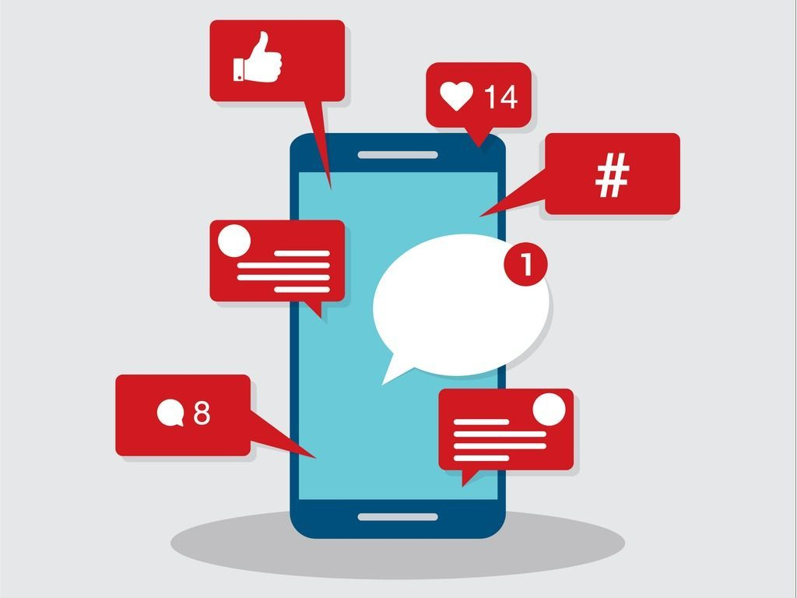

Mentions like.
Attract Internet users to your Facebook page to follow your page It is aimed at Internet users who are not yet part of your community to help you engage as many users as possible and to show your products, services, content to new people who will
probably be customers or at least active subscribers in terms of reactions to your publications.
One Click.
If your goal is to send as many Facebook users as possible to your website, this is the campaign to create. You will then have a publication in which there is a link to a page of your site, on which Internet users will be led to click.
This campaign is useful to increase your notoriety and act on SEO. In fact, the more a site is "clicked" and visited, the better it goes up in search engine results.

Interactions: likes, comments, sharing.
If you have an article to promote or a contest to promote, you will have to choose this type of advertising. The goal is to pay so that one of your publications reaches a greater reach than your only your subscribers.It is possible to target this famous reach
according to the centers of interest, the age, the gender, the country, the employment ...